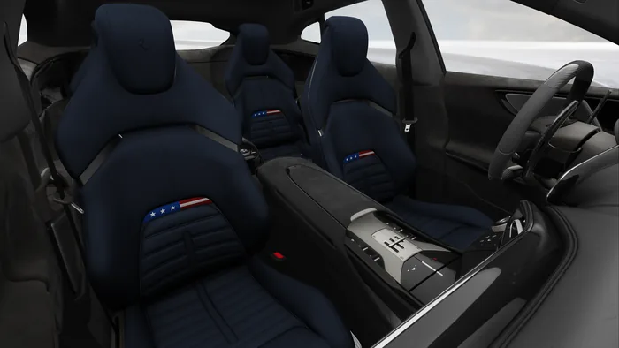
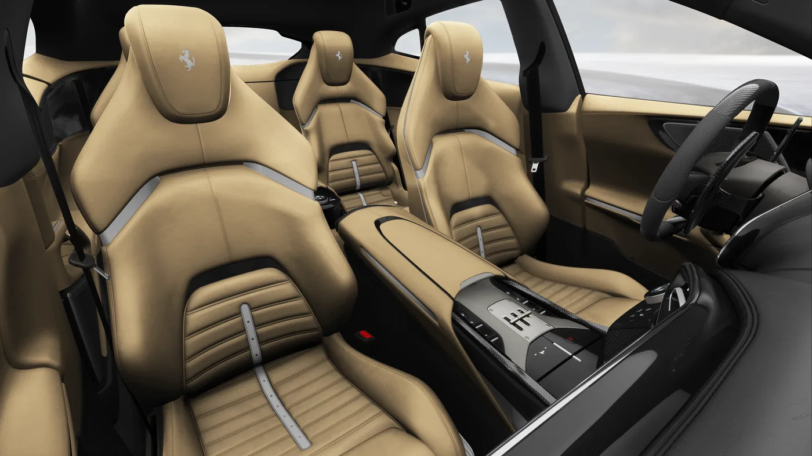

Purosangue
American Grand Tour
Atelier Collection
Two Atelier compositions
Drawing inspiration from the roads and landscapes that have shaped the American grand tour, the Purosangue American Grand Tour Atelier Collection writes the next chapter of a story that began in the 1950s.
A landscape made
for grand touring
America’s extraordinary scale and beauty have made it a natural home for grand touring. From windswept coastal cliffs to alpine summits, sun-bleached deserts, and forest roads that vanish beneath towering canopies, America’s roads unfold like a series of cinematic landscapes. For generations, this unique driving landscape has inspired a distinguished lineage of Ferrari V12 Grand Touring vehicles conceived for journeys where the road itself becomes the destination.
01 Composition
Mountain Pass
A composition of Rosso Racing 2025 with Bianco King livery and Blu Sterling leather. It evokes the character of a road carved through changing elevation, where beauty and exhilaration are deepened through a sense of reverence.
- Exterior
- Rosso Racing 2025
- Livery
- Bianco King
- Interior
- Blu Sterling

02 Composition
The Mountains
A composition of Verde Menthe and Beige Honolulu leather, inspired by the luminous color of glacial lakes framed by rugged stone peaks. It captures a landscape where the most vivid natural tones emerge from the most timeless and imposing forms.
- Exterior
- Verde Menthe
- Interior
- Beige Honolulu


Cauley Ferrari
Enquire about the
Atelier Collection
A specialist will contact you about availability and the Atelier configuration process.
Explore Purosangue